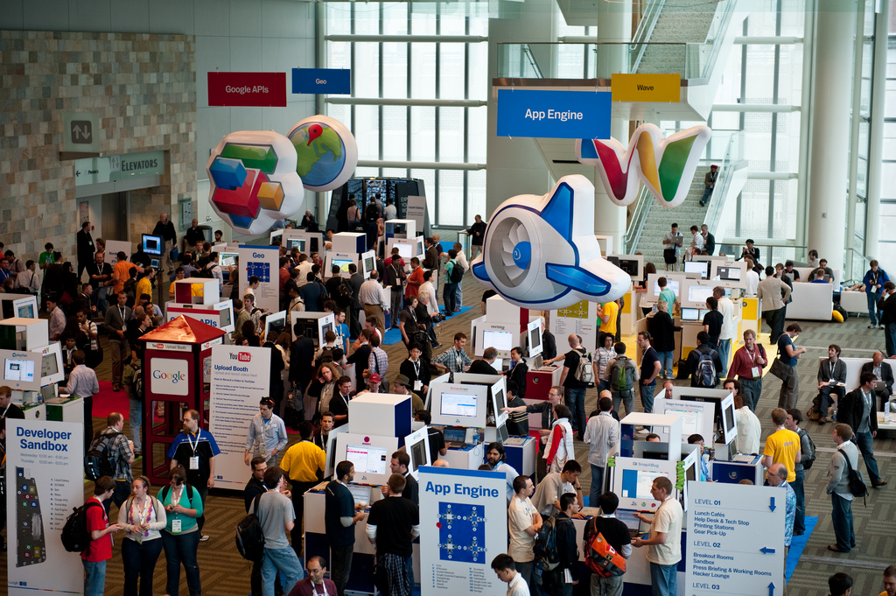
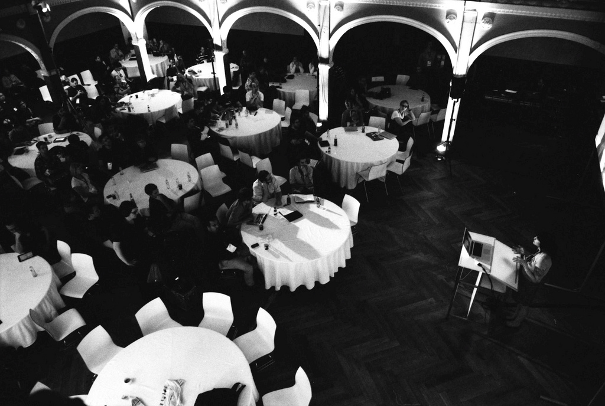

Gavin Cooper
- http://github.com/gcoop
- @gavincoop




to solve a problem or harness technology to make something more efficient

the problem is real, it isn't just trendy bullshit

$DBH = new PDO("mysql:host=$host;dbname=$dbname", $user, $pass);
$DBH->setAttribute( PDO::ATTR_ERRMODE, PDO::ERRMODE_EXCEPTION );
SELECT ur.id, ur.userId, ur.spotid, ur.actualWaveHeight, ur.windStrength, ur.windDirection, ur.photoId, ur.submitted, UNIX_TIMESTAMP(ur.reportDate) AS reportDate, ur.rating, ur.reportText, ep.id AS actualPhotoId, 3956 * 2 * ASIN(SQRT(POWER(SIN((? - abs(s.`lat`)) * pi()/180/2), 2) + COS(? * pi()/180) * COS(abs(s.`lat`) * pi()/180) * POWER(SIN((? - s.`lon`) * pi()/180/2),2))) as DIST, s.lat as latitude, s.lon as longitude FROM someSpots s LEFT JOIN somePeoplesReports ur ON (ur.spotId = s.id) LEFT JOIN aUser u ON (ur.userId = u.id) LEFT JOIN someReportImage ep ON (ur.id = ep.eyeballReportId) WHERE UNIX_TIMESTAMP(ur.reportDate) > (UNIX_TIMESTAMP(NOW())-86400) AND u.trusted = 'yes' AND s.lon BETWEEN ? AND ? AND s.lat BETWEEN ? AND ? GROUP BY ur.userId ORDER BY DIST, ur.reportDate DESC

The best placement ever